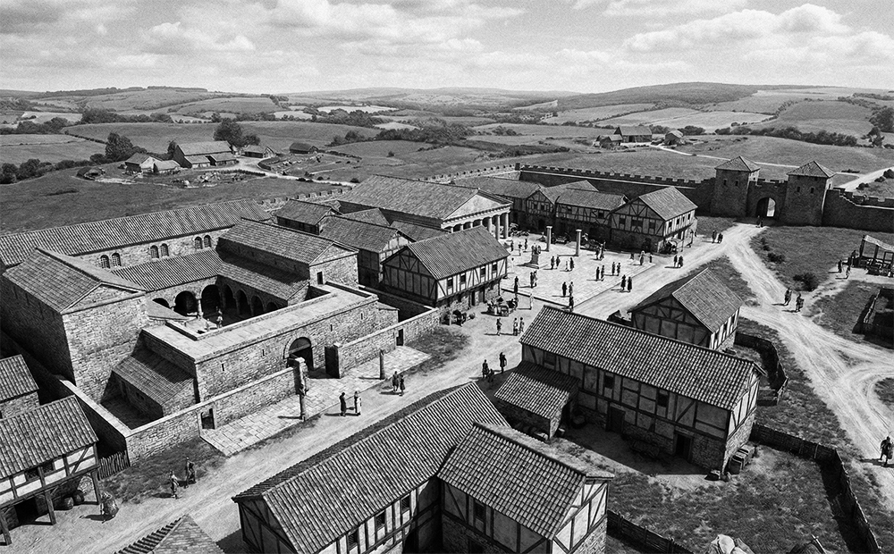
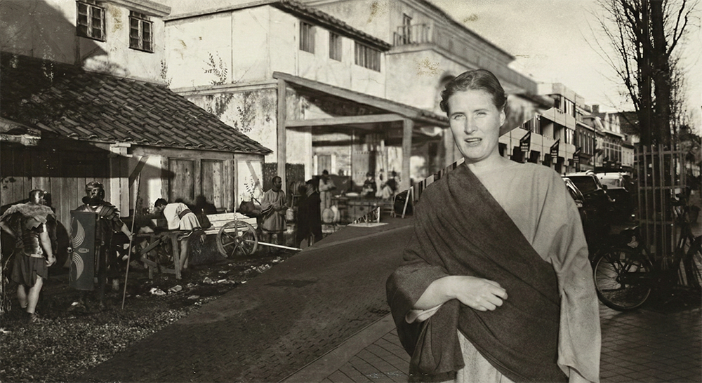
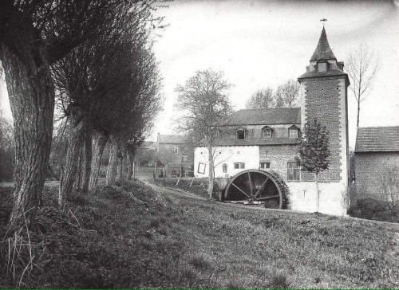
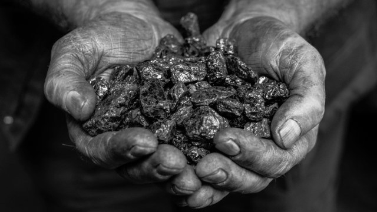
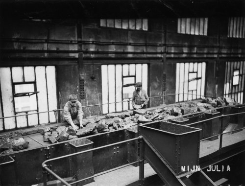

± 10 – 400 na Christus
Heerlen: Waar het Begint
Ruim tweeduizend jaar geleden is Heerlen nog geen stad van staal of steenkool, maar een strategisch baken in een ongetemd landschap. De Romeinen leggen hier het fundament voor Coriovallum: een belangrijk knooppunt waar soldaten en handelaren over een belangrijke weg trekken. Waar nu beton ligt, mengde de geur van Romeinse badhuizen zich toen met het stof van marcherende legioenen. Wat je vandaag ziet, is gebouwd op deze eeuwenoude lagen van beweging; een plek waar de wereld toen al samenkwam lang voordat de eerste mijnklok luidde.

± 50 – 300 na Christus
Coriovallum: Een Slimme Locatie

De Romeinen kozen deze plek met een reden; de naam Coriovallum betekent letterlijk 'perfect gelegen versterking'. Hier kruisten twee van de belangrijkste wegen uit het Romeinse Rijk elkaar, waardoor de plek een bruisend knooppunt werd. Soldaten, handelaren en reizigers waren hier aan de orde van de dag. Voor het eerst kwamen er stenen gebouwen en een strakke organisatie in dit gebied. Het was het begin van de moderne structuur zoals we die nu kennen. Maar diep onder het zand lag nóg iets bijzonders verborgen...
± 100 – 300 na Christus
Het Badhuis Onder de Stad
Aan het begin van de Tweede Wereldoorlog, in 1940, stuitte Heerlen plotseling op een vergeten wereld. Bij graafwerkzaamheden in het centrum kwam een compleet Romeins badhuis tevoorschijn, dat eeuwenlang verborgen lag onder het zand. Dit was vroeger dé plek om te zien en gezien te worden; na het werk kwamen de inwoners hier samen om te wassen, te roddelen en belangrijke deals te sluiten. Tegenwoordig kun je deze oude 'wellness' nog steeds met eigen ogen bekijken in het Thermenmuseum. Maar na het vertrek van de Romeinen veranderde alles: het ritme, het leven en zelfs het hele landschap...
± 900 – 1800
Van Romeinse Plek naar Dorp

Na het vertrek van de Romeinen valt de stadse drukte weg en krijgt de natuur weer de overhand. Vanaf de tiende eeuw verandert Heerlen langzaam in een rustig boerendorp waar de klok wordt gelijkgezet met de seizoenen. Langs de kabbelende beken verschijnen de eerste watermolens en grote boerenhoeven die het landschap domineren. Het leven is nu lokaal en kleinschalig; elke dag draait om hard werken op het land en simpelweg overleven. De rust in het dal lijkt eeuwig, tot rond 1900 de eerste voortekenen van een enorme verandering de aarde doen trillen…
1873
De Ontdekking
Tussen de grazende koeien en de stilte van de velden wordt een ontdekking gedaan die alles op zijn kop zet: er zit steenkool in de grond. Eerst blijft het nog even rustig, maar de industrie ziet de kansen van dit 'zwarte goud' dat diep onder de Limburgse bodem wacht. De eerste proefboringen zijn gedaan en de klok begint onvermijdelijk te tikken. De plannen liggen klaar en de wereld kijkt mee. Dan, tientallen jaren later, volgt de grote explosie die het kleine boerendorp voorgoed zal veranderen in een industriële wereldstad...

± 1900
Heerlen Rond 1900

Aan de start van de twintigste eeuw is Heerlen nog steeds dat bescheiden dorp, maar in de straten hangt een nieuwe energie. De eerste contouren van een echte centrumstad worden zichtbaar: een dokter, een veearts en zelfs een eigen kantongerecht trekken mensen naar de kern. Er verschijnen winkels en de markt wordt het kloppende hart van de streek. Het voelt allemaal nog dorps en vertrouwd, maar de schijn bedriegt. Onder de voeten van de voorbijgangers ligt de toekomst in de vorm van zwarte kolen al klaar. Wanneer de mijnbouw losbarst, zal geen enkele steen in Heerlen meer hetzelfde blijven...